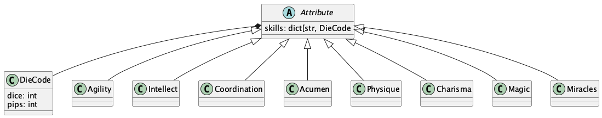
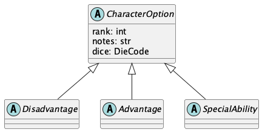
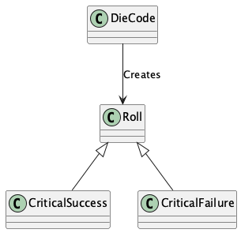

character¶
The Character (and Creature) DSL¶
Characters (and Creatures) are defined in Python modules. This makes testing and publication relatively straightforward.
An application imports the definitions and applies ordinary software testing techniques to be sure the syntax is correct. A small computation can assure the budget of dice match expectations.
The module is an application that emits RST-format files for publication.
The top-level organization of Character and Creature modules in the context of campaign books looks like this.
The source is a creatures_subsection.py file with the Python version of the creature definitions.
![@startuml
'https://plantuml.com/class-diagram
title Campaign Documents
package python {
component character.py
}
package characters {
component creatures_subsection.py {
component Creature
}
creatures_subsection.py ..> character.py : imports
}
note "Validates design details" as note_1
note_1 .. creatures_subsection.py
package rules {
package creature_section {
component creatures_subsection.rst
}
creatures_subsection.rst <-- creatures_subsection.py : "created by running with 'display'"
}
note "Creates unique campaign documents" as note_2
note_2 .. creatures_subsection.rst
@enduml](_images/plantuml-d027c6e7b8b83df97554cc423d777386a9069c2b.png)
Often, the characters or creatures are created interactively, using Jupyter Lab.
This means the opend6_tools.notebook_extract builds the module from the notebook.
For more information, see notebook_extract app.
The structure within the spell definition module is a Python list object.
The structure within any creature or character definition module is a Python list object.
A book of characters (or creatures) is a list[Character].
A Character is an object with a number of other Attributes and Options.
![@startuml
'https://plantuml.com/class-diagram
title Character or Creature Module Components
object "list[Creature]" as book
object Creature {
name
attributes
options
}
book *-- "1..m" Creature
object Attribute {
description
dice
}
Creature *-- "6..7" Attribute
object Option {
description
dice
}
Creature *-- "0..m" Option
object "~_~_test~_~_" as test
book <.. test
object app
book <.. app
@enduml](_images/plantuml-f58a5fc0965787d355b4a86e4821d11da3c70c04.png)
The Character definition is almost identical to the Creature definition.
A creature can have a collection of abilities that are natural abilities. These come from the pool of Special Ability definitions, but don’t have an associated cost.
Character and Creature¶
A Character (and a Creature) is a collection of Attribute objects and a number of distinct CharacterOption objects.
![@startuml
'https://plantuml.com/class-diagram
class Character {
name: str
occupation: str
race: str
gender: str
age: str
height: str
weight: str
physical_description: str
agility: Agility
intellect: Intellect
coordination: Coordination
acumen: Acumen
physique: Physique
charisma: Charisma
extranormal: Magic | Miracles
advantages: OptionList
disadvantages: OptionList
special_abilities: OptionList
equipment: str
description: str
realm: str
fate_points: int
character_points: int
.. computable ..
move: int
strength_damage: DieCode
body: int
finds: DieCode
}
abstract class Attribute
Attribute <|-- Agility
Attribute <|-- Intellect
Attribute <|-- Coordination
Attribute <|-- Acumen
Attribute <|-- Physique
Attribute <|-- Charisma
Attribute <|-- Magic
Attribute <|-- Miracles
Character *-- Agility
Character *-- Intellect
Character *-- Coordination
Character *-- Acumen
Character *-- Physique
Character *-- Charisma
Character *-- Magic
Character *-- Miracles
Character *-- OptionList
class OptionList <<list[CharacterOption]>>
abstract class CharacterOption
OptionList *-- "0..m" CharacterOption
abstract class Disadvantage
CharacterOption <|-- Disadvantage
abstract class Advantage
CharacterOption <|-- Advantage
abstract class SpecialAbility
CharacterOption <|-- SpecialAbility
class Creature {
natural_abilities: OptionList
}
Character <|--- Creature
Creature -- OptionList
@enduml](_images/plantuml-769af353eda45d61ebe440f33044081cf9713fd8.png)
The character has a wide variety of features.
Attributes¶
The attribute model covers the six required attributes, plus the optional, Extranormal, attribute.

The attributes (and skills) have a simple, uniform
definition.
Each skill description has a DieCode cost.
Other skills default to the DieCode cost of the Attribute.
Options¶
There are three distinct types of character options.

Each subclass – Disadvantage, Advantage, and SpecialAbility – is a flat class hierarchy.
![@startuml
'https://plantuml.com/class-diagram
abstract class CharacterOption {
{static} rank_cost: int = 1
rank: int
notes: str
}
abstract class Disadvantage
CharacterOption <|-- Disadvantage
class AchillesHeel
Disadvantage <|-- AchillesHeel
class AdvantageFlaw
Disadvantage <|-- AdvantageFlaw
class MinorStigma
Disadvantage <|-- MinorStigma
class Age
Disadvantage <|-- Age
class BadLuck
Disadvantage <|-- BadLuck
class BurnOut
Disadvantage <|-- BurnOut
class CulturalUnfamiliarity
Disadvantage <|-- CulturalUnfamiliarity
class Debt
Disadvantage <|-- Debt
class Devotion
Disadvantage <|-- Devotion
class Employed
Disadvantage <|-- Employed
class Enemy
Disadvantage <|--- Enemy
class Hindrance
Disadvantage <|--- Hindrance
class Infamy
Disadvantage <|--- Infamy
class LanguageProblems
Disadvantage <|--- LanguageProblems
class LearningProblems
Disadvantage <|--- LearningProblems
class Poverty
Disadvantage <|--- Poverty
class Prejudice
Disadvantage <|--- Prejudice
class Price
Disadvantage <|--- Price
class Quirk
Disadvantage <|--- Quirk
class ReducedAttribute
Disadvantage <|--- ReducedAttribute
@enduml](_images/plantuml-eda4477e23256a46667f08845422700ef9e37075.png)
Generally, the Advantages are a flat list of class definitions. The only unique features are name of the option.
![@startuml
'https://plantuml.com/class-diagram
abstract class CharacterOption {
{static} rank_cost: int = 1
rank: int
notes: str
}
abstract class Advantage
CharacterOption <|-- Advantage
class Authority
Advantage <|-- Authority
class Contacts
Advantage <|-- Contacts
class Cultures
Advantage <|-- Cultures
class Equipment
Advantage <|-- Equipment
class Fame
Advantage <|-- Fame
class Patron
Advantage <|-- Patron
class Size
Advantage <|-- Size
class TrademarkSpecialization
Advantage <|-- TrademarkSpecialization
class Wealth
Advantage <|-- Wealth
@enduml](_images/plantuml-f36ad2499390e943a23c494fda6ba8a0a6406139.png)
The Special Abilities include a class-level rank_cost value that’s not simply set to one. Each special ability has a distinct rank cost.
Generally, this is a flat list of class definitions. The only unique features are the rank cost and the name of the option.
![@startuml
'https://plantuml.com/class-diagram
abstract class CharacterOption {
{static} rank_cost: int
rank: int
notes: str
}
abstract class SpecialAbility {
{static} rank_cost: int
}
CharacterOption <|-- SpecialAbility
class AcceleratedHealing
SpecialAbility <|-- AcceleratedHealing
class Ambidextrous
SpecialAbility <|-- Ambidextrous
class AnimalControl
SpecialAbility <|-- AnimalControl
class ArmorDefeatingAttack
SpecialAbility <|-- ArmorDefeatingAttack
class AtmosphericTolerance
SpecialAbility <|-- AtmosphericTolerance
class AttackResistance
SpecialAbility <|-- AttackResistance
class AttributeScramble
SpecialAbility <|-- AttributeScramble
class Blur
SpecialAbility <|-- Blur
class CombatSense
SpecialAbility <|-- CombatSense
class Confusion
SpecialAbility <|--- Confusion
class Darkness
SpecialAbility <|--- Darkness
class Elasticity
SpecialAbility <|--- Elasticity
class Endurance
SpecialAbility <|--- Endurance
class EnhancedSense
SpecialAbility <|--- EnhancedSense
class EnvironmentalResistance
SpecialAbility <|--- EnvironmentalResistance
class ExtraBodyPart
SpecialAbility <|--- ExtraBodyPart
class ExtraSense
SpecialAbility <|--- ExtraSense
class FastReactions
SpecialAbility <|--- FastReactions
class Fear
SpecialAbility <|--- Fear
class Flight
SpecialAbility <|---- Flight
class GliderWings
SpecialAbility <|---- GliderWings
class Hardiness
SpecialAbility <|---- Hardiness
class Hypermovement
SpecialAbility <|---- Hypermovement
class Immortality
SpecialAbility <|---- Immortality
class Immunity
SpecialAbility <|---- Immunity
class IncreasedAttribute
SpecialAbility <|---- IncreasedAttribute
class InfravisionUltravision
SpecialAbility <|---- InfravisionUltravision
class Intangibility
SpecialAbility <|---- Intangibility
class Invisibility
SpecialAbility <|---- Invisibility
class IronWill
SpecialAbility <|----- IronWill
class LifeDrain
SpecialAbility <|----- LifeDrain
class Longevity
SpecialAbility <|----- Longevity
class LuckGood
SpecialAbility <|----- LuckGood
class LuckGreat
SpecialAbility <|----- LuckGreat
class MasterOfDisguise
SpecialAbility <|----- MasterOfDisguise
class MultipleAbilities
SpecialAbility <|----- MultipleAbilities
class NaturalArmor
SpecialAbility <|----- NaturalArmor
class NaturalHandWeapon
SpecialAbility <|----- NaturalHandWeapon
class NaturalMagick
SpecialAbility <|----- NaturalMagick
class NaturalRangedWeapon
SpecialAbility <|----- NaturalRangedWeapon
class Omnivorous
SpecialAbility <|------ Omnivorous
class ParalyzingTouch
SpecialAbility <|------ ParalyzingTouch
class PossessionLimited
SpecialAbility <|------ PossessionLimited
class PossessionFull
SpecialAbility <|------ PossessionFull
class QuickStudy
SpecialAbility <|------ QuickStudy
class SenseOfDirection
SpecialAbility <|------ SenseOfDirection
class Shapeshifting
SpecialAbility <|------ Shapeshifting
class Silence
SpecialAbility <|------ Silence
class SkillBonus
SpecialAbility <|------ SkillBonus
class SkillMinimum
SpecialAbility <|------ SkillMinimum
class Teleportation
SpecialAbility <|------ Teleportation
class Transmutation
SpecialAbility <|------ Transmutation
class UncannyAptitude
SpecialAbility <|------ UncannyAptitude
class Ventriloquism
SpecialAbility <|------ Ventriloquism
class WaterBreathing
SpecialAbility <|------ WaterBreathing
class YouthfulAppearance
SpecialAbility <|------ YouthfulAppearance
@enduml](_images/plantuml-90f6962b79d1eb602d6b59f2fa7c19fd9cf6a2a6.png)
Foundational Definitions¶
Here are some additional definitions used widely in this module.

The DieCode is more than merely a definition of dice.
It can also roll to generate values for strength damage and body.
This includes the OpenD6 “Wild Die” rules, creating values with a somewhat larger distribution.
Implementation¶
OpenD6 Character and Creature Definition DSL.
Example¶
>>> from random import seed
>>> seed(42)
>>> from opend6_tools.character import *
>>> human = Character(
... occupation="Default", race="Human"
... )
>>> human.physique.dice
DieCode(3, 0)
>>> human.extranormal.dice
DieCode(0, 0)
>>> human.budget_check(CharacterBudget.NORMAL)
{'Attributes': '18D out of 18D', 'Skills': 'Nothing out of 7D', 'Options': 'Nothing'}
>>> human.budget
{'Attributes': DieCode(18, 0), 'Skills': DieCode(0, 0), 'Options': DieCode(0, 0)}
>>> w = CharacterWriter_Literal()
>>> print(w.report(human))
.. rubric:: OpenD6 Fantasy
+--------------------------------------------------+
| Character Name: ________________________________ |
+--------------------------------------------------+
| Occupation: Default |
+-------------------------+------------------------+
| Race: Human | Gender: ______________ |
+----------------+--------+-------+----------------+
| Age: ________ | Height: ______ | Weight: ______ |
+----------------+----------------+----------------+
| Physical Description ___________________________ |
+--------------------------------------------------+
::
+----------------------+----------------------+----------------------+
| Agility 3D | Intellect 3D | |
+----------------------+----------------------+----------------------+
| acrobatics | cultures |**Advantages**: |
| climbing | devices |**Disadvantages**: |
| combat | healing |**Special Abilities**:|
| contortion | navigation |**Equipment**: |
| dodge | reading/writing |**Description**: |
| fighting | scholar | |
| flying | speaking | |
| jumping | trading | |
| melee combat | traps | |
| riding | ____________________ | |
| stealth | ____________________ | |
| ____________________ | ____________________ | |
| ____________________ | ____________________ | |
+----------------------+----------------------+ |
| Coordination 3D | Acumen 3D | |
+----------------------+----------------------+ |
| charioteering | artist | |
| lockpicking | crafting | |
| marksmanship | disguise | |
| pilotry | gambling | |
| sleight of hand | hide | |
| throwing | investigation | |
| ____________________ | know-how | |
| ____________________ | search | |
| ____________________ | streetwise | |
| ____________________ | survival | |
| ____________________ | tracking | |
| ____________________ | ____________________ | |
| ____________________ | ____________________ | |
+----------------------+----------------------+ |
| Physique 3D | Charisma 3D | |
+----------------------+----------------------+ |
| lifting | animal handling | |
| running | bluff | |
| stamina | charm | |
| swimming | command | |
| ____________________ | intimidation | |
| ____________________ | mettle | |
| ____________________ | persuasion | |
| ____________________ | ____________________ | |
| ____________________ | ____________________ | |
| ____________________ | ____________________ | |
| ____________________ | ____________________ | |
| ____________________ | ____________________ | |
| ____________________ | ____________________ | |
+----------------------+----------------------+----------------------+
| Magic ________ | | |
+----------------------+----------------------+----------------------+
| alteration | Str Damage 2D | Body Points 37 |
| apportation | Move 10 | [ ] Stunned 22-29 |
| conjuration | Fate Pts 1 | [ ] Wounded 15-21 |
| divination | Character Pts 5 | [ ] Severe 7-14 |
| ____________________ | Funds 3D | [ ] Incapac'd 4-6 |
| ____________________ | Silver 180 | [ ] Mortal 1-3 |
| | | [ ] Dead |
+----------------------+----------------------+----------------------+
Top-Level Components¶
These are functions and classes that are helpful in a Jupyter Notebook.
- opend6_tools.character.display(character: Character, check: CharacterBudget | bool = CharacterBudget.NORMAL) str[source]¶
Creates a display a character in plain text to help designers.
- opend6_tools.character.workbook_characters(context: dict[str, Any]) dict[str, Character][source]¶
Emit sequence of Characters in a Workbook.
- Parameters:
context – Usually
globals()for a Notebook- Returns:
dict mapping from
Charactername toCharacterinstances
- opend6_tools.character.workbook_groupBy(context: dict[str, ~typing.Any], group_rule: ~collections.abc.Callable[[~opend6_tools.character.Character], str] = <function <lambda>>) dict[str, list[Character]][source]¶
Transform a dict[name: str, Character] of spells into a dictionary: dict[some_attr: str, list[Character]]. This is often used to partition by realm, but any other string attribute is possible.
- Parameters:
context – Usually
globals()for a Notebook- Returns:
dict mapping from rank number to lists of
Spellinstances
Reporting and Display¶
These are the conventional top-level application components.
The display() function produces the useful RST output.
- class opend6_tools.character.CharacterWriter[source]¶
Report a character for publication. Default is long form with table header.
- static col_3(character: Character, equipment: bool = True) list[str][source]¶
For some displays, the third column is a mix of various things. It does not trivially align with other attributes and skills in the first two columns.
This is extracted from the character details, and cached within the character to slightly optimize the way the content is generated.
- static if_none(value: Any, otherwise: str) str[source]¶
A function that can be installed in Jinja to replace None values with a string.
- Parameters:
value – value to include in a template
otherwise – value to include if
valueisNoneor an empty string
- Returns:
value or otherwise
- opend6_tools.character.parse_param_name(all_characters: CharacterDict, arg_value: str) str | None[source]¶
- opend6_tools.character.sheet(character: Character | list[Character] | CharacterDict) None[source]¶
Character sheet output for players to use.
- class opend6_tools.character.CharacterBudget(*values)[source]¶
Sample budgets for normal and experienced characters.
Characters¶
- class opend6_tools.character.Character(name: str = '', occupation: str = '', race: str = '', gender: str = '', age: str = '', height: str = '', weight: str = '', physical_description: str = '', agility: ~opend6_tools.character.Attribute = Agility(DieCode(3, 0), {'acrobatics': DieCode(0, 0), 'climbing': DieCode(0, 0), 'contortion': DieCode(0, 0), 'dodge': DieCode(0, 0), 'fighting': DieCode(0, 0), 'flying': DieCode(0, 0), 'jumping': DieCode(0, 0), 'melee combat': DieCode(0, 0), 'combat': DieCode(0, 0), 'riding': DieCode(0, 0), 'stealth': DieCode(0, 0)}), intellect: ~opend6_tools.character.Attribute = Intellect(DieCode(3, 0), {'cultures': DieCode(0, 0), 'devices': DieCode(0, 0), 'healing': DieCode(0, 0), 'navigation': DieCode(0, 0), 'reading/writing': DieCode(0, 0), 'scholar': DieCode(0, 0), 'speaking': DieCode(0, 0), 'trading': DieCode(0, 0), 'traps': DieCode(0, 0)}), coordination: ~opend6_tools.character.Attribute = Coordination(DieCode(3, 0), {'charioteering': DieCode(0, 0), 'lockpicking': DieCode(0, 0), 'marksmanship': DieCode(0, 0), 'pilotry': DieCode(0, 0), 'sleight of hand': DieCode(0, 0), 'throwing': DieCode(0, 0)}), acumen: ~opend6_tools.character.Attribute = Acumen(DieCode(3, 0), {'artist': DieCode(0, 0), 'crafting': DieCode(0, 0), 'disguise': DieCode(0, 0), 'gambling': DieCode(0, 0), 'hide': DieCode(0, 0), 'investigation': DieCode(0, 0), 'know-how': DieCode(0, 0), 'search': DieCode(0, 0), 'streetwise': DieCode(0, 0), 'survival': DieCode(0, 0), 'tracking': DieCode(0, 0)}), physique: ~opend6_tools.character.Attribute = Physique(DieCode(3, 0), {'lifting': DieCode(0, 0), 'running': DieCode(0, 0), 'stamina': DieCode(0, 0), 'swimming': DieCode(0, 0)}), charisma: ~opend6_tools.character.Attribute = Charisma(DieCode(3, 0), {'animal handling': DieCode(0, 0), 'bluff': DieCode(0, 0), 'charm': DieCode(0, 0), 'command': DieCode(0, 0), 'intimidation': DieCode(0, 0), 'mettle': DieCode(0, 0), 'persuasion': DieCode(0, 0)}), extranormal: ~opend6_tools.character.Attribute = Magic(DieCode(0, 0), {'alteration': DieCode(0, 0), 'apportation': DieCode(0, 0), 'conjuration': DieCode(0, 0), 'divination': DieCode(0, 0)}), advantages: ~opend6_tools.character.OptionList | list = <factory>, disadvantages: ~opend6_tools.character.OptionList | list = <factory>, special_abilities: ~opend6_tools.character.OptionList | list = <factory>, equipment: str = '', description: str = '', realm: str = 'Human realm', move: int | str = 10, strength_damage: ~opend6_tools.character.DieCode | None = None, body: int | None = None, wounds: dict[str, str] = <factory>, funds: ~opend6_tools.character.DieCode | None = None, silver: int | None = None, fate_points: int | None = None, character_points: int | None = None, personality: str = '', objectives: str = '', native_language: str = '', other_notes: str = '')[source]¶
Character definition.
Attributes have 18 dice = 54 pips Skills have 7 dice = 21 pips
- name: str = ''¶
- occupation: str = ''¶
- race: str = ''¶
- gender: str = ''¶
- age: str = ''¶
- height: str = ''¶
- weight: str = ''¶
- physical_description: str = ''¶
- agility: Attribute = Agility(DieCode(3, 0), {'acrobatics': DieCode(0, 0), 'climbing': DieCode(0, 0), 'contortion': DieCode(0, 0), 'dodge': DieCode(0, 0), 'fighting': DieCode(0, 0), 'flying': DieCode(0, 0), 'jumping': DieCode(0, 0), 'melee combat': DieCode(0, 0), 'combat': DieCode(0, 0), 'riding': DieCode(0, 0), 'stealth': DieCode(0, 0)})¶
- intellect: Attribute = Intellect(DieCode(3, 0), {'cultures': DieCode(0, 0), 'devices': DieCode(0, 0), 'healing': DieCode(0, 0), 'navigation': DieCode(0, 0), 'reading/writing': DieCode(0, 0), 'scholar': DieCode(0, 0), 'speaking': DieCode(0, 0), 'trading': DieCode(0, 0), 'traps': DieCode(0, 0)})¶
- coordination: Attribute = Coordination(DieCode(3, 0), {'charioteering': DieCode(0, 0), 'lockpicking': DieCode(0, 0), 'marksmanship': DieCode(0, 0), 'pilotry': DieCode(0, 0), 'sleight of hand': DieCode(0, 0), 'throwing': DieCode(0, 0)})¶
- acumen: Attribute = Acumen(DieCode(3, 0), {'artist': DieCode(0, 0), 'crafting': DieCode(0, 0), 'disguise': DieCode(0, 0), 'gambling': DieCode(0, 0), 'hide': DieCode(0, 0), 'investigation': DieCode(0, 0), 'know-how': DieCode(0, 0), 'search': DieCode(0, 0), 'streetwise': DieCode(0, 0), 'survival': DieCode(0, 0), 'tracking': DieCode(0, 0)})¶
- physique: Attribute = Physique(DieCode(3, 0), {'lifting': DieCode(0, 0), 'running': DieCode(0, 0), 'stamina': DieCode(0, 0), 'swimming': DieCode(0, 0)})¶
- charisma: Attribute = Charisma(DieCode(3, 0), {'animal handling': DieCode(0, 0), 'bluff': DieCode(0, 0), 'charm': DieCode(0, 0), 'command': DieCode(0, 0), 'intimidation': DieCode(0, 0), 'mettle': DieCode(0, 0), 'persuasion': DieCode(0, 0)})¶
- extranormal: Attribute = Magic(DieCode(0, 0), {'alteration': DieCode(0, 0), 'apportation': DieCode(0, 0), 'conjuration': DieCode(0, 0), 'divination': DieCode(0, 0)})¶
- advantages: OptionList | list¶
- disadvantages: OptionList | list¶
- special_abilities: OptionList | list¶
- equipment: str = ''¶
- description: str = ''¶
- realm: str = 'Human realm'¶
- move: int | str = 10¶
- body: int | None = None¶
- wounds: dict[str, str]¶
- silver: int | None = None¶
- fate_points: int | None = None¶
- character_points: int | None = None¶
- personality: str = ''¶
- objectives: str = ''¶
- native_language: str = ''¶
- other_notes: str = ''¶
- budget_check(check: CharacterBudget = CharacterBudget.NO_BUDGET) dict[str, str][source]¶
- class opend6_tools.character.Creature(name: str = '', occupation: str = '', race: str = '', gender: str = '', age: str = '', height: str = '', weight: str = '', physical_description: str = '', agility: opend6_tools.character.Attribute = Agility(DieCode(3, 0), {'acrobatics': DieCode(0, 0), 'climbing': DieCode(0, 0), 'contortion': DieCode(0, 0), 'dodge': DieCode(0, 0), 'fighting': DieCode(0, 0), 'flying': DieCode(0, 0), 'jumping': DieCode(0, 0), 'melee combat': DieCode(0, 0), 'combat': DieCode(0, 0), 'riding': DieCode(0, 0), 'stealth': DieCode(0, 0)}), intellect: opend6_tools.character.Attribute = Intellect(DieCode(3, 0), {'cultures': DieCode(0, 0), 'devices': DieCode(0, 0), 'healing': DieCode(0, 0), 'navigation': DieCode(0, 0), 'reading/writing': DieCode(0, 0), 'scholar': DieCode(0, 0), 'speaking': DieCode(0, 0), 'trading': DieCode(0, 0), 'traps': DieCode(0, 0)}), coordination: opend6_tools.character.Attribute = Coordination(DieCode(3, 0), {'charioteering': DieCode(0, 0), 'lockpicking': DieCode(0, 0), 'marksmanship': DieCode(0, 0), 'pilotry': DieCode(0, 0), 'sleight of hand': DieCode(0, 0), 'throwing': DieCode(0, 0)}), acumen: opend6_tools.character.Attribute = Acumen(DieCode(3, 0), {'artist': DieCode(0, 0), 'crafting': DieCode(0, 0), 'disguise': DieCode(0, 0), 'gambling': DieCode(0, 0), 'hide': DieCode(0, 0), 'investigation': DieCode(0, 0), 'know-how': DieCode(0, 0), 'search': DieCode(0, 0), 'streetwise': DieCode(0, 0), 'survival': DieCode(0, 0), 'tracking': DieCode(0, 0)}), physique: opend6_tools.character.Attribute = Physique(DieCode(3, 0), {'lifting': DieCode(0, 0), 'running': DieCode(0, 0), 'stamina': DieCode(0, 0), 'swimming': DieCode(0, 0)}), charisma: opend6_tools.character.Attribute = Charisma(DieCode(3, 0), {'animal handling': DieCode(0, 0), 'bluff': DieCode(0, 0), 'charm': DieCode(0, 0), 'command': DieCode(0, 0), 'intimidation': DieCode(0, 0), 'mettle': DieCode(0, 0), 'persuasion': DieCode(0, 0)}), extranormal: opend6_tools.character.Attribute = Magic(DieCode(0, 0), {'alteration': DieCode(0, 0), 'apportation': DieCode(0, 0), 'conjuration': DieCode(0, 0), 'divination': DieCode(0, 0)}), advantages: opend6_tools.character.OptionList | list = <factory>, disadvantages: opend6_tools.character.OptionList | list = <factory>, special_abilities: opend6_tools.character.OptionList | list = <factory>, equipment: str = '', description: str = '', realm: str = 'Human realm', move: int | str = 10, strength_damage: opend6_tools.character.DieCode | None = None, body: int | None = None, wounds: dict[str, str] = <factory>, funds: opend6_tools.character.DieCode | None = None, silver: int | None = None, fate_points: int | None = None, character_points: int | None = None, personality: str = '', objectives: str = '', native_language: str = '', other_notes: str = '', natural_abilities: opend6_tools.character.OptionList | list = <factory>, note: str = '')[source]¶
- natural_abilities: OptionList | list¶
- note: str = ''¶
- class opend6_tools.character.OptionList(*args: CharacterOption)[source]¶
Cooperates with
pprint.pformat()to produce pretty content
Attributes¶
- class opend6_tools.character.Attribute(base: DieCode | None = None, skills: dict[str, DieCode | int] | None = None)[source]¶
Map any explicitly-named skills to the DieCode for that skill.
So far, the upper limit is about 12 distinct skills for an Attribute.
A skill name is either a simple word or a more complicated word:specialization.
Reserved names:
'name''dice'(for the attribute measure)'keys','values','items'from thedictclass.
For character sheets, all skills are shown, even if there’s no overriding dice allocation. (In a narrow, technical sense, the dice value for a missing skill comes from the overall attribute.) For character detail (in .RST), only the overriding skill values need to be shown.
Example
>>> from opend6_tools.character import *
>>> class Extranormal(Attribute): ... SKILL_NAMES = ("alteration", "apportation", "conjuration", "divination",) >>> ex = Extranormal(DieCode(3, 2), {"divination": DieCode(4)}) >>> ex.name 'Extranormal' >>> ex.alteration is None True >>> ex.divination is None False >>> str(ex['divination']) '4D'
- class opend6_tools.character.Acumen(base: DieCode | None = None, skills: dict[str, DieCode | int] | None = None)[source]¶
Bases:
AttributeThe Acumen attribute.
See CHARACTER BASICS.
Rules:
Acumen: Your character’s mental quickness, creativity, and attention to detail.
- class opend6_tools.character.Charisma(base: DieCode | None = None, skills: dict[str, DieCode | int] | None = None)[source]¶
Bases:
AttributeThe Charisma attribute.
See CHARACTER BASICS.
Rules:
Charisma: A gauge of emotional strength, physical attractiveness, and personality.
- class opend6_tools.character.Intellect(base: DieCode | None = None, skills: dict[str, DieCode | int] | None = None)[source]¶
Bases:
AttributeThe Intellect attribute.
See CHARACTER BASICS.
Rules:
Intellect: A measure of strength of memory and ability to learn.
- class opend6_tools.character.Agility(base: DieCode | None = None, skills: dict[str, DieCode | int] | None = None)[source]¶
Bases:
AttributeThe Agility attribute.
See CHARACTER BASICS.
Rules:
Agility: An indication of balance, limberness, quickness, and full-body motor abilities.
- class opend6_tools.character.Coordination(base: DieCode | None = None, skills: dict[str, DieCode | int] | None = None)[source]¶
Bases:
AttributeThe Coordination attribute.
See CHARACTER BASICS.
Rules:
Coordination: A quantification of hand-eye coordination and fine motor abilities.
- class opend6_tools.character.Physique(base: DieCode | None = None, skills: dict[str, DieCode | int] | None = None)[source]¶
Bases:
AttributeThe Physique attribute.
See CHARACTER BASICS.
Rules:
Physique: An estimation of physical power and ability to resist damage.
- class opend6_tools.character.Magic(base: DieCode | None = None, skills: dict[str, DieCode | int] | None = None)[source]¶
Bases:
AttributeThe Extranormal magic attribute.
See CHARACTER BASICS.
Rules:
Extranormal: An assessment of your character’s extraordinary abilities, which could include magic, miracles, or other extranormal talents. It is often listed by its type, rather than by the term “Extranormal.”
- class opend6_tools.character.Miracles(base: DieCode | None = None, skills: dict[str, DieCode | int] | None = None)[source]¶
Bases:
AttributeThe Extranormal miracles attribute.
See CHARACTER BASICS.
Rules:
Extranormal: An assessment of your character’s extraordinary abilities, which could include magic, miracles, or other extranormal talents. It is often listed by its type, rather than by the term “Extranormal.”
Options: Disadvantage¶
- class opend6_tools.character.Disadvantage(rank: int, notes: str = '')[source]¶
Bases:
CharacterOptionBase class of all disadvantages.
- class opend6_tools.character.AchillesHeel(rank: int, notes: str = '')[source]¶
Bases:
Disadvantage
- class opend6_tools.character.AdvantageFlaw(rank: int, notes: str = '')[source]¶
Bases:
Disadvantage
- class opend6_tools.character.MinorStigma(rank: int, notes: str = '')[source]¶
Bases:
Disadvantage
- class opend6_tools.character.Age(rank: int, notes: str = '')[source]¶
Bases:
Disadvantage
- class opend6_tools.character.BadLuck(rank: int, notes: str = '')[source]¶
Bases:
Disadvantage
- class opend6_tools.character.BurnOut(rank: int, notes: str = '')[source]¶
Bases:
Disadvantage
- class opend6_tools.character.CulturalUnfamiliarity(rank: int, notes: str = '')[source]¶
Bases:
Disadvantage
- class opend6_tools.character.Debt(rank: int, notes: str = '')[source]¶
Bases:
Disadvantage
- class opend6_tools.character.Devotion(rank: int, notes: str = '')[source]¶
Bases:
Disadvantage
- class opend6_tools.character.Employed(rank: int, notes: str = '')[source]¶
Bases:
Disadvantage
- class opend6_tools.character.Enemy(rank: int, notes: str = '')[source]¶
Bases:
Disadvantage
- class opend6_tools.character.Hindrance(rank: int, notes: str = '')[source]¶
Bases:
Disadvantage
- class opend6_tools.character.Infamy(rank: int, notes: str = '')[source]¶
Bases:
Disadvantage
- class opend6_tools.character.LanguageProblems(rank: int, notes: str = '')[source]¶
Bases:
Disadvantage
- class opend6_tools.character.LearningProblems(rank: int, notes: str = '')[source]¶
Bases:
Disadvantage
- class opend6_tools.character.Poverty(rank: int, notes: str = '')[source]¶
Bases:
Disadvantage
- class opend6_tools.character.Prejudice(rank: int, notes: str = '')[source]¶
Bases:
Disadvantage
- class opend6_tools.character.Price(rank: int, notes: str = '')[source]¶
Bases:
Disadvantage
- class opend6_tools.character.Quirk(rank: int, notes: str = '')[source]¶
Bases:
Disadvantage
- class opend6_tools.character.ReducedAttribute(rank: int, notes: str = '')[source]¶
Bases:
Disadvantage
Options: Advantage¶
- class opend6_tools.character.Advantage(rank: int, notes: str = '')[source]¶
Bases:
CharacterOptionBase class of all advantages.
Options: Special Ability¶
- class opend6_tools.character.SpecialAbility(rank: int, notes: str = '')[source]¶
Bases:
CharacterOptionBase class of all Special Abilities.
- class opend6_tools.character.AcceleratedHealing(rank: int, notes: str = '')[source]¶
Bases:
SpecialAbility
- class opend6_tools.character.Ambidextrous(rank: int, notes: str = '')[source]¶
Bases:
SpecialAbility
- class opend6_tools.character.AnimalControl(rank: int, notes: str = '')[source]¶
Bases:
SpecialAbility
- class opend6_tools.character.ArmorDefeatingAttack(rank: int, notes: str = '')[source]¶
Bases:
SpecialAbility
- class opend6_tools.character.AtmosphericTolerance(rank: int, notes: str = '')[source]¶
Bases:
SpecialAbility
- class opend6_tools.character.AttackResistance(rank: int, notes: str = '')[source]¶
Bases:
SpecialAbility
- class opend6_tools.character.AttributeScramble(rank: int, notes: str = '')[source]¶
Bases:
SpecialAbility
- class opend6_tools.character.Blur(rank: int, notes: str = '')[source]¶
Bases:
SpecialAbility
- class opend6_tools.character.CombatSense(rank: int, notes: str = '')[source]¶
Bases:
SpecialAbility
- class opend6_tools.character.Confusion(rank: int, notes: str = '')[source]¶
Bases:
SpecialAbility
- class opend6_tools.character.Darkness(rank: int, notes: str = '')[source]¶
Bases:
SpecialAbility
- class opend6_tools.character.Elasticity(rank: int, notes: str = '')[source]¶
Bases:
SpecialAbility
- class opend6_tools.character.Endurance(rank: int, notes: str = '')[source]¶
Bases:
SpecialAbility
- class opend6_tools.character.EnhancedSense(rank: int, notes: str = '')[source]¶
Bases:
SpecialAbility
- class opend6_tools.character.EnvironmentalResistance(rank: int, notes: str = '')[source]¶
Bases:
SpecialAbility
- class opend6_tools.character.ExtraBodyPart(rank: int, notes: str = '')[source]¶
Bases:
SpecialAbility
- class opend6_tools.character.ExtraSense(rank: int, notes: str = '')[source]¶
Bases:
SpecialAbility
- class opend6_tools.character.FastReactions(rank: int, notes: str = '')[source]¶
Bases:
SpecialAbility
- class opend6_tools.character.Fear(rank: int, notes: str = '')[source]¶
Bases:
SpecialAbility
- class opend6_tools.character.Flight(rank: int, notes: str = '')[source]¶
Bases:
SpecialAbility
- class opend6_tools.character.GliderWings(rank: int, notes: str = '')[source]¶
Bases:
SpecialAbility
- class opend6_tools.character.Hardiness(rank: int, notes: str = '')[source]¶
Bases:
SpecialAbility
- class opend6_tools.character.Hypermovement(rank: int, notes: str = '')[source]¶
Bases:
SpecialAbility
- class opend6_tools.character.Immortality(rank: int, notes: str = '')[source]¶
Bases:
SpecialAbility
- class opend6_tools.character.Immunity(rank: int, notes: str = '')[source]¶
Bases:
SpecialAbility
- class opend6_tools.character.IncreasedAttribute(rank: int, notes: str = '')[source]¶
Bases:
SpecialAbility
- class opend6_tools.character.InfravisionUltravision(rank: int, notes: str = '')[source]¶
Bases:
SpecialAbility
- class opend6_tools.character.Intangibility(rank: int, notes: str = '')[source]¶
Bases:
SpecialAbility
- class opend6_tools.character.Invisibility(rank: int, notes: str = '')[source]¶
Bases:
SpecialAbility
- class opend6_tools.character.IronWill(rank: int, notes: str = '')[source]¶
Bases:
SpecialAbility
- class opend6_tools.character.LifeDrain(rank: int, notes: str = '')[source]¶
Bases:
SpecialAbility
- class opend6_tools.character.Longevity(rank: int, notes: str = '')[source]¶
Bases:
SpecialAbility
- class opend6_tools.character.LuckGood(rank: int, notes: str = '')[source]¶
Bases:
SpecialAbility
- class opend6_tools.character.LuckGreat(rank: int, notes: str = '')[source]¶
Bases:
SpecialAbility
- class opend6_tools.character.MasterOfDisguise(rank: int, notes: str = '')[source]¶
Bases:
SpecialAbility
- class opend6_tools.character.MultipleAbilities(rank: int, notes: str = '')[source]¶
Bases:
SpecialAbility
- class opend6_tools.character.NaturalArmor(rank: int, notes: str = '')[source]¶
Bases:
SpecialAbility
- class opend6_tools.character.NaturalHandWeapon(rank: int, notes: str = '')[source]¶
Bases:
SpecialAbility
- class opend6_tools.character.NaturalMagick(rank: int, notes: str = '')[source]¶
Bases:
SpecialAbility
- class opend6_tools.character.NaturalRangedWeapon(rank: int, notes: str = '')[source]¶
Bases:
SpecialAbility
- class opend6_tools.character.Omnivorous(rank: int, notes: str = '')[source]¶
Bases:
SpecialAbility
- class opend6_tools.character.ParalyzingTouch(rank: int, notes: str = '')[source]¶
Bases:
SpecialAbility
- class opend6_tools.character.PossessionLimited(rank: int, notes: str = '')[source]¶
Bases:
SpecialAbility
- class opend6_tools.character.PossessionFull(rank: int, notes: str = '')[source]¶
Bases:
SpecialAbility
- class opend6_tools.character.QuickStudy(rank: int, notes: str = '')[source]¶
Bases:
SpecialAbility
- class opend6_tools.character.SenseOfDirection(rank: int, notes: str = '')[source]¶
Bases:
SpecialAbility
- class opend6_tools.character.Shapeshifting(rank: int, notes: str = '')[source]¶
Bases:
SpecialAbility
- class opend6_tools.character.Silence(rank: int, notes: str = '')[source]¶
Bases:
SpecialAbility
- class opend6_tools.character.SkillBonus(rank: int, notes: str = '')[source]¶
Bases:
SpecialAbility
- class opend6_tools.character.SkillMinimum(rank: int, notes: str = '')[source]¶
Bases:
SpecialAbility
- class opend6_tools.character.Teleportation(rank: int, notes: str = '')[source]¶
Bases:
SpecialAbility
- class opend6_tools.character.Transmutation(rank: int, notes: str = '')[source]¶
Bases:
SpecialAbility
- class opend6_tools.character.UncannyAptitude(rank: int, notes: str = '')[source]¶
Bases:
SpecialAbility
- class opend6_tools.character.Ventriloquism(rank: int, notes: str = '')[source]¶
Bases:
SpecialAbility
- class opend6_tools.character.WaterBreathing(rank: int, notes: str = '')[source]¶
Bases:
SpecialAbility
- class opend6_tools.character.YouthfulAppearance(rank: int, notes: str = '')[source]¶
Bases:
SpecialAbility
Foundations¶
- class opend6_tools.character.Roll(die: list[int], pips: int, reroll_count: int = 0, success: bool = False, fail: bool = False)[source]¶
A single roll of the dice.
- die: list[int]¶
The die values
- fail: bool = False¶
Was this a CriticalFailure?
- pips: int¶
Additional pips to add
- reroll_count: int = 0¶
Only for CriticalSuccess rolls.
- success: bool = False¶
Was this a CriticalSuccess?
- property total: int¶
Total of Die plus bonus pips
- class opend6_tools.character.CriticalSuccess(die: list[int], pips: int, reroll_count: int = 0, success: bool = False, fail: bool = False)[source]¶
Bases:
RollA single roll that was a Critical Success – Wild Die was 6.
- success: bool = True¶
Was this a CriticalSuccess?
- class opend6_tools.character.CriticalFailure(die: list[int], pips: int, reroll_count: int = 0, success: bool = False, fail: bool = False)[source]¶
Bases:
RollA single roll that was a Critical Failure – Wild Die was 1.
- fail: bool = True¶
Was this a CriticalFailure?
- class opend6_tools.character.DieCode(d: int | str, pips: int = 0)[source]¶
The definition of a set of Die. This includes the number of dice and bonus pips to add.
>>> from opend6_tools.character import DieCode >>> D = DieCode(1) >>> str(3 * D) '3D' >>> str(5 * D + 1) '5D+1' >>> (6*D+2).value 20 >>> str(D.from_pips(20)) '6D+2' >>> str(DieCode("3D + 2")) '3D+2' >>> str((5*D+1)*2) '10D+2'
>>> from random import seed >>> seed(42) >>> physique = 4*D >>> [str(physique.roll()) for _ in range(12)] ['17!', '12', '12? (18)', '6? (11)', '4? (6)', '16', '20', '15', '11', '18!', '7', '11']
- d: int = 1¶
Number of dice
- classmethod from_pips(pips: int) DieCode[source]¶
Converts number of pips to Die + Pips.
- Parameters:
pips – pips value
- Returns:
DideCode
- pips: int = 0¶
Bonus pips to add
- roll() Roll[source]¶
The “Wild Die” roll algorithm.
This returns several things:
Ordinary result: a
Rollinstance.- Critical Success – at least one wild die had a 6.
A
CriticalSuccessinstance.
- Critical Failure – the first wild die was a 1. Two totals (with and without the highest die value.)
A
CriticalFailureinstance.
- property value: int¶
Value in pips.